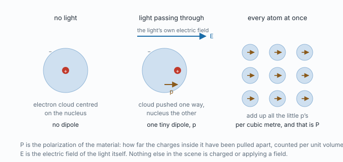
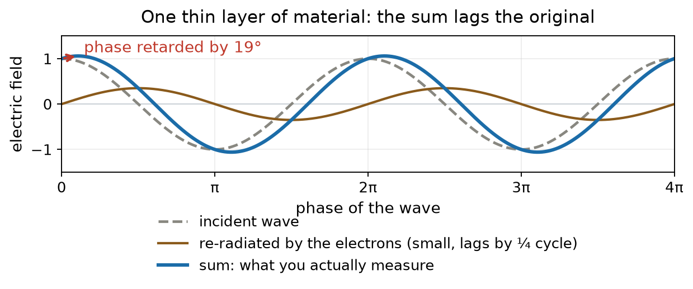
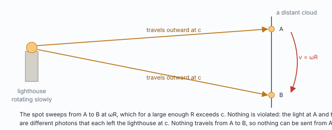
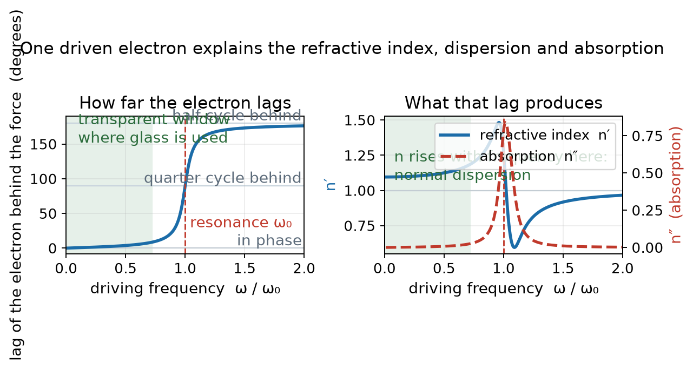
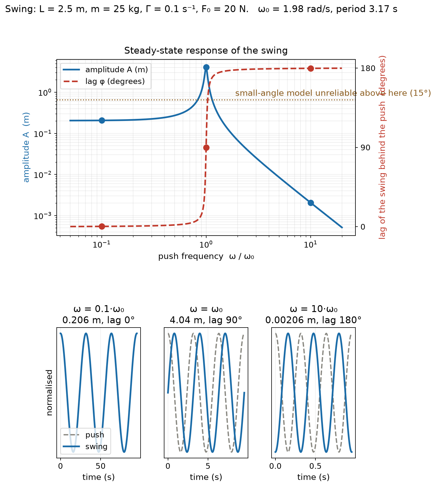
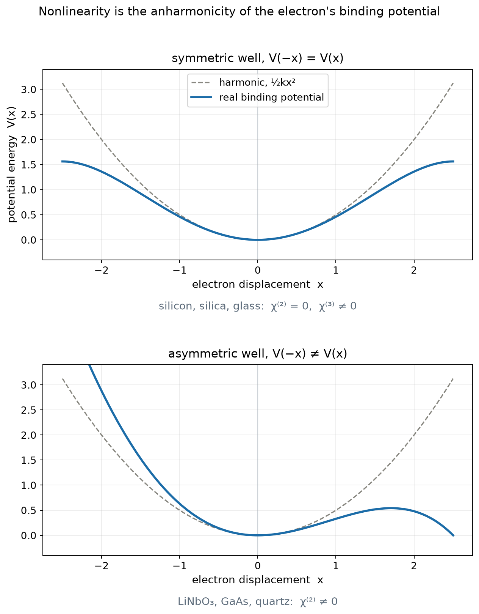

| Symbol | Name | Units |
|---|---|---|
| E | electric field of the light | V/m |
| P | polarization of the material, dipole moment per unit volume | C/m² |
| p | dipole moment of one atom | C·m |
| ε₀ | vacuum permittivity | F/m |
| χ | electric susceptibility | dimensionless |
| εr, n | relative permittivity, refractive index; n² = εr | dimensionless |
| c, v | speed of light in vacuum, phase speed in the material | m/s |
| ω, ω₀ | driving frequency of the light, natural frequency of the bound electron | rad/s |
| Γ | damping rate of the electron's motion | 1/s |
| m, e | electron mass, elementary charge | kg, C |
| x | displacement of the electron cloud from the nucleus | m |
| φ | phase lag of the displacement behind the driving force | rad or degrees |
| n′, n″ | real and imaginary parts of the index; n″ is absorption | dimensionless |

Every atom is a positive nucleus with a negative electron cloud around it. With no light present the cloud is centred on the nucleus, and the atom has no dipole. Light is an oscillating electric field. As it passes, that field pushes the electron cloud one way and the nucleus the other, by an amount so small that in a fiber carrying a milliwatt of laser light it is around 10−16 m, a millionth of the width of the atom. The atom is now a tiny dipole p.
Add up all the little dipoles in a cubic metre and the total is the polarization P. It is a property of the material: how far the charges inside it have been pulled apart. And E is the field of the light itself. Nothing in the scene is charged or applying a field from outside.
For a weak field the response is proportional to the push:
Combining (1) with the definition of D gives D = ε₀(1 + χ)E, and the wave equation then propagates at speed v = c/√(1 + χ). Since the index is defined as n = c/v:
The 1 is the vacuum, present even with no material. The χ is what the material adds. For ordinary transparent matter χ > 0, which is why the index is always greater than one.

chain/phase_delay.py.The speed of light in vacuum, c, is constant and is never violated. A light pulse nevertheless takes measurably longer to cross a block of glass. Both are true, and two tempting pictures of why are wrong: photons do not bounce between atoms, or glass would look like milk, and atoms do not absorb and re-emit with a delay, or the beam would lose direction and phase.
What happens is interference. Between the atoms the field always travels at c. But the oscillating electrons radiate their own wave at the same frequency, and that re-radiated wave arrives a quarter cycle behind the incident one. The sum, which is what any detector sees, has almost the original shape but its peaks arrive later. Stack layer upon layer and the retardation accumulates in proportion to distance, which is indistinguishable from a wave travelling more slowly.
| Speed | What it is | May it differ from c? |
|---|---|---|
| front velocity | the leading edge of a wave that has just been switched on | never; always exactly c |
| phase velocity, vp = c/n | how fast a crest advances | yes, and it may exceed c |
| group velocity, vg | how fast a pulse envelope moves; carries the signal | yes |

Relativity constrains what can carry energy or information. A crest in an established wave is a label on a pattern, like the lighthouse spot, and carries neither. To send information something must change, a change is a new front, and fronts travel at exactly c. That is why vp = c/n is free to be less than c, or in some materials more, without troubling anyone.
Near the bottom of its binding well the electron feels a restoring force proportional to displacement, plus damping, plus the push from the light:
A mass on a spring being shaken. Writing E = E₀cos(ωt) and solving for the steady state with complex exponentials gives an amplitude and a lag:

chain/lorentz.py.And why prisms work: in the transparent window n rises with frequency because rising frequency means climbing toward the resonance. Blue is nearer the ultraviolet than red, sees a larger index, and bends more.
| Swing | Bound electron |
|---|---|
| child and seat, mass m | the electron's mass |
| gravity pulling it back | the binding, mω₀²x |
| natural rate, set by rope length: ω₀² = g/L | ω₀, set by how tightly the electron is bound |
| air resistance and the pivot | damping Γ |
| the parent's hands, pushing at ω | the light's field, at ω |
| how far the swing goes | displacement x, and so P |
Worked with numbers: L = 2.5 m, m = 25 kg, Γ = 0.10 s−1, F₀ = 20 N. Resolving along the arc and using sin θ ≈ θ gives equation (3) with m·g/L in place of mω₀², so ω₀ = √(g/L) = 1.98 rad/s and the period is 3.17 s.

chain/pendulum.py.| push | amplitude | lag | swing angle |
|---|---|---|---|
| 0.1·ω₀ | 0.206 m | 0.3° | 4.7° |
| ω₀ | 4.04 m, linear model | 90° | 93°, not valid |
| 10·ω₀ | 2.1 mm | 179.7° | 0.05° |
There is one χ. Equation (1) quietly assumes that P is parallel to E, instantaneous, in phase with E, and proportional to E. Each assumption can be dropped on its own.
| Assumption dropped | χ becomes | Phenomenon |
|---|---|---|
| P parallel to E | a tensor χij | birefringence, polarization dependent loss |
| instantaneous | a function χ(ω) | dispersion |
| in phase with E | complex, χ′ + iχ″ | absorption: n″ and α = 2k₀n″ |
| proportional to E | a series, χ(1)E + χ(2)E² + χ(3)E³ | all of nonlinear optics |
The superscripts in the last row are orders in a Taylor expansion, not alternatives. χ(1) is the ordinary χ; the higher terms are always present and merely too small to notice until the field is large. Their units follow from the equation: χ(2) in m/V, χ(3) in m²/V².

chain/anharmonic.py.P is the polarization of the material: the dipole moment per unit volume from electron clouds displaced relative to their nuclei. E is the electric field of the light itself. Nothing else in the scene is charged.
The phase velocity is c/n. Between atoms the field always moves at c; the re-radiated waves from the electrons add to it with a lag, and the sum peaks later at each layer. The front of a switched-on wave still travels at exactly c.
Power is force times velocity. Velocity peaks a quarter cycle after displacement, so the force must lead the displacement by a quarter cycle to transfer energy fastest. Resonance is that condition.
Its binding well is symmetric, so the expansion of the restoring force contains no even term, and χ(2) vanishes by parity. The same argument applies to the pendulum.
Full records and the conventions this study is written under are on the references page.